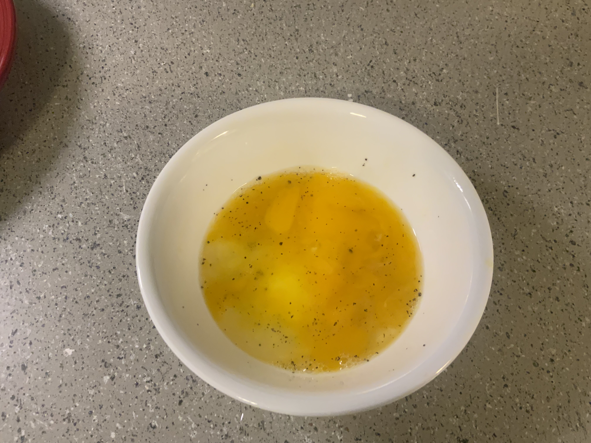
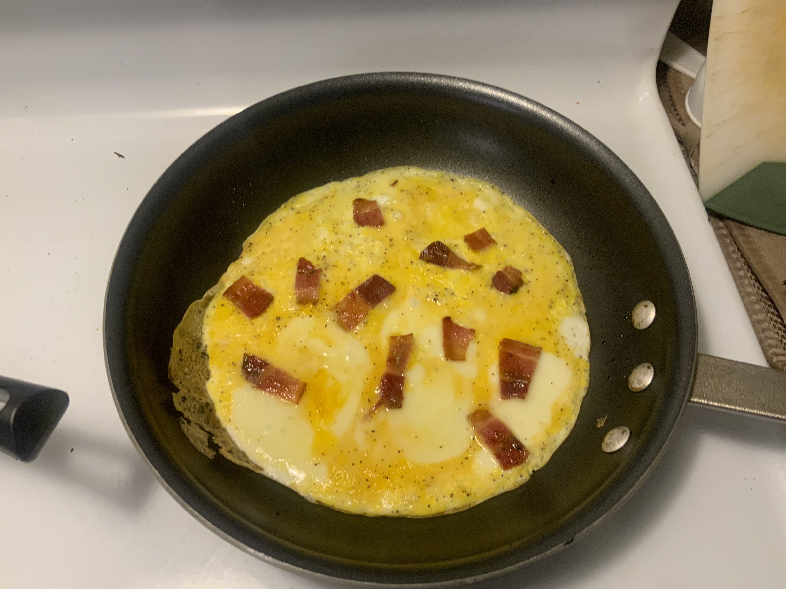
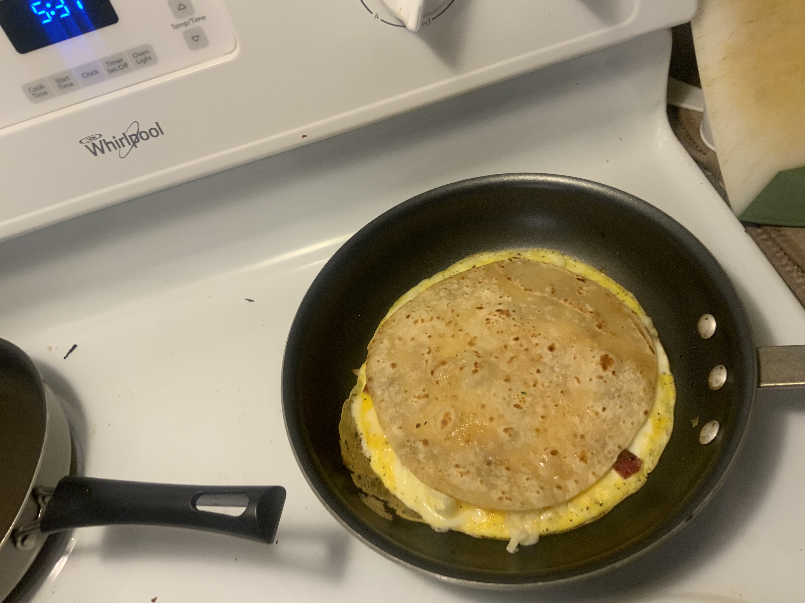
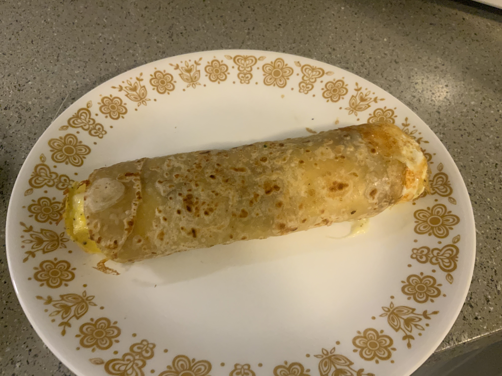

Egg Burrito
I’ve always been a fan of egg and as far as I’m concerned, tortillas just make ‘em better. The part I have a hard time with is keeping each part hot. It seems like I end up with either a cold tortilla or cold eggs. When I was searching around for recipes, I found an innovative method that should solve all my troubles.
I started by precooking my bacon first to get a little grease in the pan. Then I fried my tortilla in it. It took me 4 tries to get 2 unburned ones. Burned ones were a good snack to hold me over while I cooked though. At Walmart you can buy these uncooked tortillas that are top notch. I would highly recommend.
The eggs cooked easily. Getting the eggs to sit flat in the pan was kind of tricky because all the burners on our stove list to the left by 5 degrees. I just held it flat for a minuet while they set up. I cut up the bacon into bits with scissors directly on to the eggs. I put authentic Idaho cheese on top too.
My brother Jacob doesn’t like crispy bacon, so I only warmed it up. I think he doesn’t trust me to brown them. After I “browned” some wontons a little on the crispy side we eat those soft too.
This is the great idea. You put the cooked tortilla on top of the eggs and flip the whole burrito at once. It worked out quite well if I do say so myself. Two advantages; everything is warm when you eat it, and the eggs are already in the tortilla.
Fold and eat! All and all I would rate this one 10/10. Easy to make (if you don’t mind eating a few burnt tortillas) and good flavor. Especially with some sour cream and siracha. If you’re in the market for some, the tabasco brand is top notch. I think they added more sugar to the recipe than the classic. Not the same flavor but defiantly worth trying.
